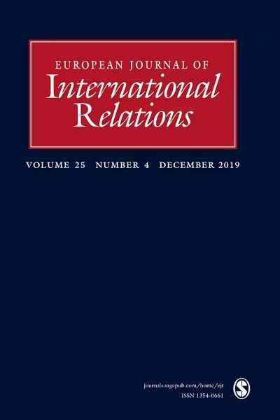
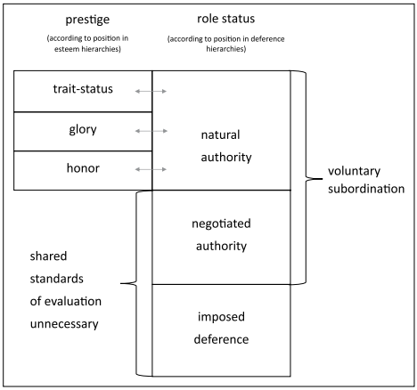

收录于合集 #理论研究 96个

作品简介
【作者】 莱茵哈德•沃尔夫（Reinhard Wolf），德国法兰克福大学政治学系国际关系教授，擅于将哲学与社会心理学的观点应用于国际关系的理论与实证研究，目前的研究重点是地位、尊重与情感在国际关系中的作用。
【编译】 刘颖哲（国政学人编译员，对外经济贸易大学国际关系学院）
【校对】 柯孜凝
【审核】 姚寰宇
【排版】 王国伟
【文章来源】 Wolf, Reinhard. “Taking Interaction Seriously: Asymmetrical Roles and the Behavioral Foundations of Status.” European Journal of International Relations 25.4 (2019): 1186-211. Web.
期刊介绍

European Journal of International Relations（《欧洲国际关系杂志》），简称“EJIR”，是由欧洲政治研究协会国际关系常设小组（SGIR）经同行评议的季刊，涵盖的范围从前沿的理论辩论到学者们感兴趣的当代和历史主题。它成立于1995年，主编为荷兰阿姆斯特大学的Geoffrey Underhill。根据Journal Citation Reports显示，2018年EJIR杂志影响因子为2.756，在91个国际关系类期刊中排名第11（11/91）。
正视互动：不对称角色与国际地位的行为基础
Taking interaction seriously: Asymmetrical roles and
the behavioral foundations of status
莱茵哈德•沃尔夫（Reinhard Wolf）
内容提要
如今，地位（status）再次成为国际关系领域的重要议题之一，但其定义的模糊性、不完整性和互斥性继续阻碍连续的研究项目发展。在已经提出的定义中，即便是最精确者也无法概括地位这一概念的全部内容。目前对国际地位的研究集中在有关特质（traits）的集体信念方面，这些特质重视单个行为体，因此不能解释通过双边互动产生的地位差异，或是颠覆地区地位等级的挑衅行为。当前的研究还忽视了对国际地位最为激烈的侵犯方式，即侮辱性的行为与关系。为了弥补这种概念上的缺陷，本文首先回顾了国际关系领域和其他领域对地位这一概念的定义，作者将其划分为声望（prestige）与角色地位（role status）两种地位等级结构。随后，作者提出一个融合了这两种地位等级结构的模型并阐述二者之间因果关系。在这一过程中，文章还阐释了地位与如权威（authority）、声望（prestige）、信誉（honor）和荣耀（glory）等相似概念的联系。最后，作者对俄罗斯与“西方”之间看似反复无常的地位争端进行了细致和连贯的讨论，借此说明了这一框架的理论解释力。
文章导读
一、 导论
本文认为，国际关系中对地位的主流理解过于狭隘，因此与许多有关地位争端的经验性解释互斥。当前的地位概念忽略了足以构成不对称社会等级的顺从模式，这不仅与社会心理学的最新发现不一致，而且也不能恰当解释地位在主导权争夺与侮辱性互动中起到的关键作用。 最引人注目的是，当前的方法无法解释地位受挫国家的挑衅行为，即使这种阻挠和反叛行为经常玷污国家作为国际社会负责任成员的形象。 比如，在与美国的地位争端中，法国总统戴高乐和俄罗斯总统普京显然认为公开挑衅是摆脱不光彩的劣势立场的最佳途径。 在下文中，作者提出了一个新的概念框架，该框架将地位区分为公共声望和互动角色地位，从而更好地理解各种地位战略，为地位研究建立更坚实的基础。
文章结构如下： 首先， 本文表明地位研究的领先学者在实证研究上更加突出互动，超出其明确的地位定义。 随后 本文阐述了为什么国际地位的主流概念不能充分解释角色定位的二元冲突。 作者认为主流观点主要关注行为者有关属性与成就的集体信仰，而忽略了更基本的社会不对称:由角色与其反对者（要求主导或顺从）构成的等级秩序。第三部分 进一步区分两个基本层次结构的子组件。 第四部分 简要概述了这一概念框架下可能出现的地位争端，并讨论了它们的相对强度。文章 最后 进行了实证说明，作者认为俄罗斯与美国正在进行的地位争端，尤其是俄罗斯公开挑衅的行为，只能在这个更微妙的框架内得到正确理解。
** 二、互动如何蔓延：著名实证研究中的概念延伸**
How interaction creeps in: Conceptual
stretching in prominent empirical accounts
最近国际关系领域关于地位的研究热潮主要是基于一种特殊的地位理解，即一个国家等级是由公众对其品质的评价决定的。基于这种概念，人们认为当一国代表拒绝接受关于该国品质的国际信仰时，他们会试图改变他国对本国“价值属性”的看法，以维护其要求的国家地位。然而，学者在实证研究中讲述的故事却截然不同。在已发表的案例研究中，当外国人对某国持有(个人或集体)的观点时，政府很少表示不满。 相反，有 地位 意识的 政府非常在意主要国家 对待 （ treat ）本国的方 式，并 且当 他们认为 遭遇 不被尊重的行为 （ behavior ）时 ，通常会采取直接的反制措施 以示抗议。
更令人费解的是，当前对国际地位的理解主要集中在价值属性的集体信念方面。事实上，不满意的国家有时会通过阻挠或破坏的行为来提高社会地位。当有必要通过有争议的行动表明国家不能再被忽视，或面对既成事实（faits accomplis）时，有地位意识的政府似乎愿意以其作为国际社会负责任成员的资格为代价。 地位研究 的领先学 者 事实上承认 ， 地位这一概念 与其说是对 国家 属性的社会评价，不如说是避免统治或建立控制 权 。
** 三、两种基本地位等级结构：声望等级与顺从模式** ****
Prestige rankings and patterns of deference:
Two basic status hierarchies
地位研究学者在很大程度上将地位概念局限于等级秩序中的位置商品（positional good）。（注：positional good是指其价值依赖于与他人比较的相对效果的商品，可以彰显所有者与众不同的身份或社会地位，如住房、名声。）同时，学者们对顺从模式的地位含义关注不足，并暗示地位等级不能出现在群体环境之外。这种观点严重阻碍了对二元地位关系的理解，并且忽视了不对称角色本身构成的地位差异。毕竟，等级角色可以在没有第三方的情况下发展。正如温特（Wendt）所指出的，主从关系和其他共同构成的角色可以基于两个不共享表征的孤立行为体的相互作用。 因此， 无论是人类还是动物 ，群体层面的等级差异可能基于双 向 互动， 进 而 形成 顺从 模式 。
最近的社会心理学实验也表明，地位的提高可以通过两种不同的方式，其一是获得同辈的尊重，其二是使同伴产生服从的行为与反应(Anderson et al., 2012; Cheng et al., 2013; Halevy et al., 2012)。 事实上， 顺从 模式似乎是更重要的子类别，因为行为互动比集体信念更容易被观察到 (Mercer，2017)。领导与属下、保护人与被保护人、教师和学生之间的不对称非常明显。因此，与相对地位的公开讨论相比，人际待遇是更重要的社会等级指标。
行为者 可以通过 两种方式提高地位，一是认可其优点 (声望) ，二是 诱导他人承认其社会支配地位(角色地位)。 正如下一节将展示的，两种等级结构可以相互影响:通常，一个高度受尊重的人在顺从等级中也享有较高的地位。另一方面，占主导地位的个人的行为与观点通常会得到更积极的评价。然而，这两种等级结构并非包含关系，两方面的进步都意味着地位的提高。
四、 地位模型的子组件
Sub-components of status
为了说明文献涉及的各种子概念之间的区别和联系，我们需要认识到这样一个事实，对地位的透彻理解必须包含声望与顺从等级。在声望等级方面，其公认的排名至少以共同文化的某些元素为前提，这种文化需要共享的评价标准。 我们 必须对声望的三个经常混淆的子成分进行区分：特质-地位、信誉与荣耀。 第一部分基于对价值属性的普遍认可，后两个子组件则反映了对行为的看法——荣耀意味着行为被正面评价，而在信誉的情况下，行为会获得正面和负面评价。 顺从等级同样由三个子组件构成：基于自然权威（ natural authority ）的不对称收益、基于协商权威（ negotiated authority ）、基于强制服从（ imposed deference ）。 第三种方式源于武力或单方面威胁，而其他类型是自愿服从模式，其中只有自然权威需要共享的文化背景，以形成对评价标准的共识。相比之下，协商权威只能基于有利可图的功能交换。

图一：地位的综合框架（箭头表示因果关系）
4 .1 声望等级地位结构的子组件
Sub-components of status in prestige hierarchies
专注于声望等级结构运作的学者们认为，处于较高地位的行为者通常在社会评价等级中表现出色。高地位者包括属性或财产受到特定社会广泛尊重的行为者(特质- 地位)与行为受到赞赏和道德认可的行为者(荣耀或信誉)。 正如社会认同理论(SIT)所指出的， 特质-地位 方面突出的行为者通常会组成(正式或非正式的)团体，团队成员通常被赋予较高的等级(例如常春藤联盟毕业生、先进的工业化国家)，其他行为体将试图通过获得必要属性(社会流动性)以加入群体（Tajfel and Turner, 1979）。
荣耀和信誉不同于特质-地位，它们基于受人尊敬的行为，而非财富、强制能力、智力或性别等属性(Tsygankov, 2012)。 信誉与符合规范的行为有着内在联系，更准确地说，是与维护诚信形象需要的行为有关。信誉的分配与特质- 地位的分配相反，它不仅基于当前的特征，而且反映过去的事件。信誉和特质-地位的第三个差异更加明显，信誉等级的评价主要集中在稳定的负面价值上。 公然违反相关的信誉准则会损害行为体多年的声望，而通过忏悔和赔偿来重获信誉通常需要几十年的时间。相比之下，获得积极的属性(如先进的技术)可能会迅速提升一方的特质- 地位。
荣耀介于信誉与特质-地位之间。第一，荣耀的分配也取决于行动。 勇敢的军事行动通常被认为是光荣的，而过度谨慎则不够光彩。但是有些光荣的行为不需要由想要保持良好信誉的行为者来实施。 第二，与信誉性行为相反，荣耀性行为是超越职权的。 成功的登月可以提升一个国家的国际声望，而未能参加太空竞赛很少被认为是不光彩的。信誉准则规定最低要求，它关注所有“守信人物”需要履行的基本职责。 第三，荣耀可能永无止境，它与特质-地位一样不依赖于对特定模式的完全遵从。 对信誉的要求则形成了一个完整的网络，其不足不能用另一种信誉性行为弥补（O’Neill, 1999）。 最后,荣耀的成就也取决于幸运情况，而信誉性行为从不需要有利的条件。
4.2 顺从等级地位结构的子组件
Sub-components of status in deference hierarchies
顺从等级结构是从两个或多个行为者(或群体)之间的顺从模式中产生的。在国际关系中，主权平等的法律架构在很大程度上限制了顺从等级的建立。然而，不对称的服从模式常常表现在：一方经常屈从于另一方的观点、愿望或命令，而另一方并不回应。
不对称关系似乎是地位秩序的最基本形式。简单的从属习惯可以解释猿、狼和其他社会性动物之间的等级排序，远比声望等级概念更有说服力。 作者区分了三种基本的 顺从 等级:基于自然权威的顺从模式、基于协商权威、基于强制服从。正如“权威”概念的涵义，前两种类型意味着从属者的同意。而强制服从是一种更为单方面的服从关系，通常源于威胁或制裁(往往与使用武力有关)。
自然权威往往是自然出现的，因为主导者不必采取刻意的行动来确立其优越地位（如中国古代的朝贡体系）。 在以共同目的联合的群体中，自然权威也能在没有正式安排的情况下，促使行为者自愿服从明确的命令。 比如，在登山队中有些技能不足的队员，他们可能会乐意遵循最有经验的队员的指示。在国际交往中，国家有时会接受“领导国”地位，因为它们相信自己有更大的能力(尽管这通常意味着要为手头的任务贡献更多的资源)。
通常情况下，某个国家对他国命令的常规性服从会引出另一种服从模式:源于协商权威的服从。 它基于两个或多个国家之间的协议，反映了它们不对称的相互依赖。 严格来说，协商权威不同于自然权威，它不依赖于具有一致评价标准的共同文化。 协商权威建立在各方出于自身原因而认为有利的交易基础上。大多数权威关系是自然权威与协商权威的混合。 例如，第二次世界大战后，联合国安全理事会常任理事国被赋予特权地位，这不仅是由于其他会员国对这些国家成为国际安全保护者的期望，也是由于他们通过击败轴心国而获得的声望。
最后，顺从的模式也可以任意强加(强制顺从)。 在声望分配的共同标准薄弱或完全缺乏的情况下，原始权力可能成为冲突地位诉求的唯一仲裁者——尤其是当物质不对称没有带来互惠互利的权力契约时。隐性威胁往往足以强加等级关系，如弱者面临一系列无力挑战的既成事实。有时，通过强制顺从获得的地位是剥削行为的附属物，比如曾经强加于中国和日本的不平等条约。强加的差异也可能源于高度不对称物质的相互依赖性，这导致了持久的角色差异。此外，在某些情况下，从属者不再与新的上级平起平坐，仅仅是因为不愿面临不利的对抗。
由于地位具有众多不同的基础，复杂的社会设计了各种各样的象征性工具来简化公共地位的等级结构。 自然，将分散的地位差异整合到分层的地位群体中， 一方面 促进了秩序的形成，通过减少模糊地带来避免争端， 另一方面 还产生了与这些群体相关的新的争端类别，从而增加最终发生冲突的风险。只要各种等级分层恰当，争端通常可以避免的，成员的地位信念因此互相加强。然而这种情况很少出现，对不同排名的分歧往往会导致各种的地位争端。
五、区分地位冲突：争端的类型
How status conflicts differ:
A typology of disputes
地位冲突出现的不同情况应该被反映在国际关系理论中。关于适当的荣耀或特质- 地位的争端必须与关于顺从的争端明确区分开来，因为后者总是涉及特定的反对者，而且往往更加激烈。
早期发展起来的类型学提供了一个启发式的工具，用来识别可能引起地位争端的各种因素。这种冲突可能源于以下几种摩擦：
① 行为者间对其声望有不同看法（第一类、第二类）；
② 行为者的声望与权威之间的摩擦（第三类、第四类）；
③ 行为者不断变化的物质基础与其不变的地位之间的摩擦（第五类、第六类）；
④ 行为者间对第三方的适当地位持有不同意见（第七类）。
关于特质- 地位或荣耀水平的争端（第一类）仅限于图1中的声望部分，并可能以两种基本形式出现，具体取决于不满意的一方是否希望成为特定地位团体的成员。在一种情况下，行为体只是认为更广泛的社会没有充分认识到其宝贵的财产或成就。 一个当代的例子是中国所谓的“诺贝尔奖情结”(Nobel Prize complex)。许多中国国民认为，由于其国家的显著发展，中国经济学家应被授予诺贝尔经济学奖，而瑞典科学院尚未这样做的事实被广泛视为对中国成就的不充分评价。通常，这种分歧停留在伤害感情的层面，很少引发公开的争端。 在另一种情况下，行为体感到被不公正地排除在特定地位群体之外。 这是不成功的社会流动的典型结果（Tajfel and Turner，1979）。此时受害方具有发泄愤怒的集体目标。然而，只要团体成员的首要回报只是声望，反抗措施往往保持相当温和的状态。
信誉冲突（第二类）也局限于声望部分，但由于利益重大而往往更剧烈。 信誉具有非黑即白的特性，对行为体信用的玷污会严重影响社会交往，也经常使其被排斥在社会团体之外。与荣耀或特质- 地位的削弱不同，信誉丧失的后果可以持续很长时间，因为它无法通过补偿措施迅速弥补。
地位冲突的另一种突出类型是由声望和自然权威之间的摩擦引起的（第三类）。 在这种情况下，一方认为，鉴于其(公认的)声望水平，其他行为体应该表现出更多的服从。 在某些冲突中 ，双方都觉得有权期待对方的服从。 在另一些冲突中 ，曾经处于从属地位的行为者认为不再有义务接受对方的统治，如2003年美国和德国关于入侵伊拉克的争端。 同样，顺从关系中的冲突可能源于一个错误的假设，即声望的提高已经成功变成物质权力的永久替代品。 事实上，强制统治可能暂时被自然权威所取代，但优势一方易受声望下降的影响，从而破坏其自然权威。因此，帝国主义列强常常低估了其殖民地获得独立的渴望。
同样，协商权威会因为与声望等级的摩擦而不稳定（第四类）。 在这种情况下，从属者认为其日益增长的声望（或主导国下降的声望）使其有权重新对契约进行谈判，以改变不合适的不对称关系。正如戴高乐重新掌权后美法关系的裂痕。当美国拒绝在西方联盟中授予法国同等的领导权时，戴高乐因此公然驱逐美国军队并退出北约军事一体化机构(Bozo, 2001; Martin, 2016)。
当对物质依存关系的不同评估削弱了 协商服从模式时，不对称的行为体间就会发生另一种类型的冲突（第五类）。 在这种情况下，从属者开始认为它可以忽略主导者的指示。该类型也在前面提到的美德冲突中发挥了作用。
既定角色与物质基础之间的差异不断扩大，这也可能破坏强制服从模式（第六类）。 上升力量将逐渐不愿意坚持相互尊重的实践(例如对势力范围的相互尊重)，以及容忍对称的角色分配。相反，其倾向于以越来越多的既成事实来对抗对手，而这是在对方的威慑能力仍有效的情况下不敢实施的。上升力量试图证明其可以忽略对方的利益，从而建立一个单方面的服从模式。这种地位冲突已经严重损害了当代美俄关系（Putin, 2008）。 重要的是，对另一方可能试图实施不对称关系的担忧，往往会引发最严重的地位冲突。 这些反应并不符合有着社会认同理论传统的地位理论的逻辑。与提高声望的行为不同，有效的反抗不需要任何人的认可。挑衅行为只需要被“傲慢”的对手注意到，从而打破其对顺从行为的预期。
最后，两方的地位冲突也可能是由于与第三方关系的转变（第七类）。 此类争端更有可能是由顺从模式的变化引起的。在某些情况下，一方的服从收益会影响到整个服从关系网络的其他成员，因为第三方可能会失去一些有价值的权利或选择，如停止干涉新建立的特殊影响范围。 这就解释了为什么在国际社会中，大国对其他国家在服从等级中的地位提高最为敏感：一方面 ，其他国家对新保护人的服从最易损害大国的地位(因为它们比大多数国际行为者更有能力影响新保护人)。 另一方面 ，大国通常会与新保护人“在同一联盟竞争”，因此更有可能面临相对地位的倒退（Barnhart, 2017）。
** 六、理解俄罗斯与美国和“西方”的地位争端**
** Understanding Russia’s status disputes**
with America and “the West”
本节 通过 地位 框架 解释一个 经常困扰国际关系学者的案例 ： 俄罗斯与西方的当代地位争端。 毫无争议的是，普京领导下的俄罗斯认为没有受到美国的尊重，也在较小程度上感受不到其欧洲盟友的尊重。西方无法将俄罗斯纳入现有地位秩序，这令西方观察家感到困惑。
然而 ，一旦人们认识到 当代俄罗斯 更愿 重获 与 美国同等的角色地位，而 非 提高声望 时 ，这个矛盾就 得到了 解决。 诚然，在20世纪90年代初，俄罗斯改革者部分地接受了西方民主国家的自然权威，并公开效仿自由制度以提高声望。然而，俄罗斯的精英们不久便意识到，美国领导下的西方试图利用俄罗斯的弱点，仿佛无视其地位并将其随意对待（源于试图强制服从的 第六类争端 ）。事实证明，北约东扩在这方面至关重要，俄罗斯认为这是干涉其传统势力范围的可耻行动。即使在华约解体后，俄罗斯也期望东欧和中欧服从其基于优越声望的特殊安全权利，并认为有权得到西方对其势力范围的尊重。俄罗斯认为这是其大国角色的组成部分，且由于在打败纳粹德国中做出了杰出贡献，理应获得这一特权（声望与自然权威之间的摩擦产生的 第三类争端 ，基于与第三方地位关系争端的 第七类争端 ）。
事实上，西方政治家与观察家认为俄罗斯的声望正在下降。由于俄罗斯未能走向西方预期的现代化道路，西方国家政府（尤其是美国）认为越来越没有必要遵从其观点、愿望或权利（Kanet, 2015)。因此，即便面对俄罗斯的反对，北约领导人仍毫不犹豫地对塞尔维亚发动空袭。在俄罗斯人看来，随着又一轮北约扩张、英美未经授权入侵伊拉克、西方援助俄罗斯“近邻”的颜色革命，以及西方对其内政日益高涨的批评，国际关系只会变得更糟（Lo, 2015; Putin, 2014）。这些事实似乎都表明，无论俄罗斯在共同反恐战争中做出了什么贡献，它都将继续被视为一个无足轻重（quantité négligeable）的国家，并被期望继续容忍美国的单边主义(源于强制服从的 第六类争端 )（Mankoff, 2009; Putin, 2014)。 然而，俄罗斯精英早已不再接受西方的自然权威， 并 认为没有必要依靠西方的保护或支持来稳定国际秩序。 这样的结果只能是沮丧、愤怒和对抗（Forsberg,2014; Larson and Shevchenko, 2014; Stent, 2014)。
没有人比普京（Vladimir Putin）本人表达得更清楚。在2014年“广场革命”（Maidan revolution）与俄罗斯入侵乌克兰东部之后，普京总统曾痛批西方的双重标准，尤其是美国的武断行为，对俄罗斯大国权利的漠视，以及西方对其“适当”势力范围的不尊重。 尽管在同一次演讲中，普京否认他想 在 全球划分势力范围，但他坚持认为应该“ 在 区域中心和围绕它们形成的一体化项目 中 拥有平等的发展权” 。因此，西方谈判者诱使乌克兰加入欧洲联盟被认为是侵犯了另一个“区域中心”的非正式权利(基于与第三方关系的 第七类争端 )。“没有人愿意听我们的话，也没有人想说话”(Putin, 2014)。
在这种观点下，对克里米亚和东乌克兰的入侵被认为有效地破除了西方的想法，即俄罗斯将继续服从西方对其势力范围的干涉。虽然干预行动可能对俄罗斯的国际形象产生不良影响，但与恢复其作为大国的整体地位相比，这种代价被认为是值得的。俄罗斯驻北约大使已将2008年对格鲁吉亚的入侵描述为“关键的外交成就”，因此被认为恢复了西方对俄罗斯的“尊重”。 显然，俄罗斯当前的领导层更看重 有助于提升其整体地位 的 国家 角色地位，而 非 国际声望 。
社会认同理论下地位概念化的讨论忽略了这些动态，因为他们假设俄罗斯更加渴望获得公认的地位象征，或者进入特定地位群体。 然而，俄罗斯领导层长期以来 并未试图通过 加入“西方先进民主国家”来提升地位 ， 也没有过多强调 其在 八国集团 的 成员资格 ，俄罗斯 真正关心的是 其相对于 美国的 位置。 这种二元关系在其地位思维中最为重要，在这一点上，俄罗斯断然拒绝接受从属的角色。为了感受到尊重，俄罗斯现任领导者希望被美国视为“平等伙伴”，这似乎比提高其国际声望更为重要。
七、总结 ****
世界 正从过去的西方优势转向经济资源与军事力量的均衡分配，国际地位争端将日益突出。鉴于经济相互依赖的互惠性与核武器提供的安全威慑作用，更高等级的内在利益可能成为推动大国修正主义的主要因素。在这种情况下，国际关系领域迫切需要对地位期望及其可能引发的各种冲突进行区分和一致的分类。
学者们需要超越地位理论依赖的社会认同理论。倘若国际关系专家忽视国家从主导角色中感受到的地位价值，以及他们厌恶本国被置于从属角色的情感强度，研究人员就会误解地位争端中最重要的驱动因素。他们将无法建立能够持续解释屈辱与反抗的重要性的理论，这不仅不利于理论的分析，还会为实践带来危险。毕竟，角色差异对亚洲文明尤其重要，而亚洲文明似乎注定要在未来的地位争端中扮演非常重要的角色。因此，在未来几十年中，忽视角色地位的代价将会变得很高。
_ ** _ ** _ ** _
本文由国政学人独家编译推荐，文章观点不代表本平台观点，转载请联系授权。**__